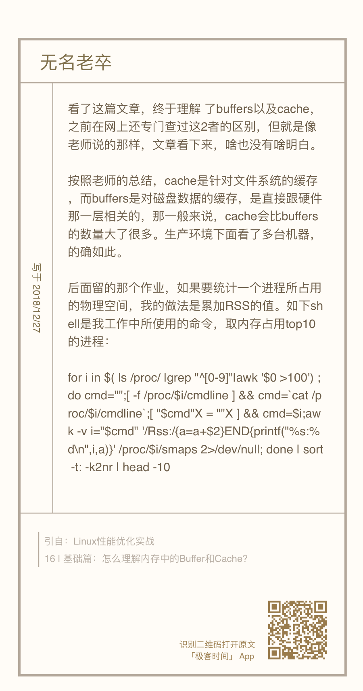
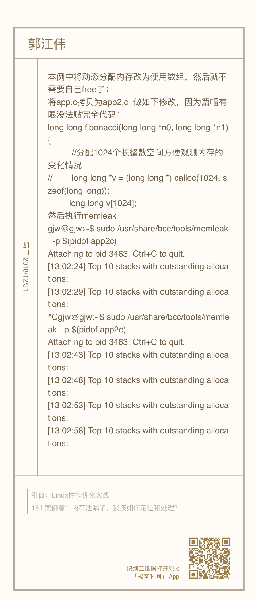

- 00 开篇词 别再让Linux性能问题成为你的绊脚石.md.html
- 01 如何学习Linux性能优化？.md.html
- 02 基础篇：到底应该怎么理解“平均负载”？.md.html
- 03 基础篇：经常说的 CPU 上下文切换是什么意思？（上）.md.html
- 04 基础篇：经常说的 CPU 上下文切换是什么意思？（下）.md.html
- 05 基础篇：某个应用的CPU使用率居然达到100%，我该怎么办？.md.html
- 06 案例篇：系统的 CPU 使用率很高，但为啥却找不到高 CPU 的应用？.md.html
- 07 案例篇：系统中出现大量不可中断进程和僵尸进程怎么办？（上）.md.html
- 08 案例篇：系统中出现大量不可中断进程和僵尸进程怎么办？（下）.md.html
- 09 基础篇：怎么理解Linux软中断？.md.html
- 10 案例篇：系统的软中断CPU使用率升高，我该怎么办？.md.html
- 11 套路篇：如何迅速分析出系统CPU的瓶颈在哪里？.md.html
- 12 套路篇：CPU 性能优化的几个思路.md.html
- 13 答疑（一）：无法模拟出 RES 中断的问题，怎么办？.md.html
- 14 答疑（二）：如何用perf工具分析Java程序？.md.html
- 15 基础篇：Linux内存是怎么工作的？.md.html
- 16 基础篇：怎么理解内存中的Buffer和Cache？.md.html
- 17 案例篇：如何利用系统缓存优化程序的运行效率？.md.html
- 18 案例篇：内存泄漏了，我该如何定位和处理？.md.html
- 19 案例篇：为什么系统的Swap变高了（上）.md.html
- 20 案例篇：为什么系统的Swap变高了？（下）.md.html
- 21 套路篇：如何“快准狠”找到系统内存的问题？.md.html
- 22 答疑（三）：文件系统与磁盘的区别是什么？.md.html
- 23 基础篇：Linux 文件系统是怎么工作的？.md.html
- 24 基础篇：Linux 磁盘I_O是怎么工作的（上）.md.html
- 25 基础篇：Linux 磁盘I_O是怎么工作的（下）.md.html
- 26 案例篇：如何找出狂打日志的“内鬼”？.md.html
- 27 案例篇：为什么我的磁盘I_O延迟很高？.md.html
- 28 案例篇：一个SQL查询要15秒，这是怎么回事？.md.html
- 29 案例篇：Redis响应严重延迟，如何解决？.md.html
- 30 套路篇：如何迅速分析出系统I_O的瓶颈在哪里？.md.html
- 31 套路篇：磁盘 I_O 性能优化的几个思路.md.html
- 32 答疑（四）：阻塞、非阻塞 I_O 与同步、异步 I_O 的区别和联系.md.html
- 33 关于 Linux 网络，你必须知道这些（上）.md.html
- 34 关于 Linux 网络，你必须知道这些（下）.md.html
- 35 基础篇：C10K 和 C1000K 回顾.md.html
- 36 套路篇：怎么评估系统的网络性能？.md.html
- 37 案例篇：DNS 解析时快时慢，我该怎么办？.md.html
- 38 案例篇：怎么使用 tcpdump 和 Wireshark 分析网络流量？.md.html
- 39 案例篇：怎么缓解 DDoS 攻击带来的性能下降问题？.md.html
- 40 案例篇：网络请求延迟变大了，我该怎么办？.md.html
- 41 案例篇：如何优化 NAT 性能？（上）.md.html
- 42 案例篇：如何优化 NAT 性能？（下）.md.html
- 43 套路篇：网络性能优化的几个思路（上）.md.html
- 44 套路篇：网络性能优化的几个思路（下）.md.html
- 45 答疑（五）：网络收发过程中，缓冲区位置在哪里？.md.html
- 46 案例篇：为什么应用容器化后，启动慢了很多？.md.html
- 47 案例篇：服务器总是时不时丢包，我该怎么办？（上）.md.html
- 48 案例篇：服务器总是时不时丢包，我该怎么办？（下）.md.html
- 49 案例篇：内核线程 CPU 利用率太高，我该怎么办？.md.html
- 50 案例篇：动态追踪怎么用？（上）.md.html
- 51 案例篇：动态追踪怎么用？（下）.md.html
- 52 案例篇：服务吞吐量下降很厉害，怎么分析？.md.html
- 53 套路篇：系统监控的综合思路.md.html
- 54 套路篇：应用监控的一般思路.md.html
- 55 套路篇：分析性能问题的一般步骤.md.html
- 56 套路篇：优化性能问题的一般方法.md.html
- 57 套路篇：Linux 性能工具速查.md.html
- 58 答疑（六）：容器冷启动如何性能分析？.md.html
- 加餐（一） 书单推荐：性能优化和Linux 系统原理.md.html
- 加餐（二） 书单推荐：网络原理和 Linux 内核实现.md.html
- 用户故事 “半路出家 ”，也要顺利拿下性能优化！.md.html
- 用户故事 运维和开发工程师们怎么说？.md.html
- 结束语 愿你攻克性能难关.md.html
- 捐赠
22 答疑（三）：文件系统与磁盘的区别是什么？
你好，我是倪朋飞。
专栏更新至今，四大基础模块的第二个模块——内存性能篇，我们就已经学完了。很开心你还没有掉队，仍然在积极学习和实践操作，并且热情地留言与讨论。
这些留言中，我非常高兴看到，很多同学用学过的案例思路，解决了实际工作中的性能问题。我也非常感谢 espzest、大甜菜、Smile 等积极思考的同学，指出了文章中某些不当或者不严谨的地方。另外，还有我来也、JohnT3e、白华等同学，积极在留言区讨论学习和实践中的问题，也分享了宝贵的经验，在这里也非常感谢你们。
今天是性能优化的第三期。照例，我从内存模块的留言中摘出了一些典型问题，作为今天的答疑内容，集中回复。为了便于你学习理解，它们并不是严格按照文章顺序排列的。
每个问题，我都附上了留言区提问的截屏。如果你需要回顾内容原文，可以扫描每个问题右下方的二维码查看。
问题1：内存回收与OOM
虎虎的这个问题，实际上包括四个子问题，即，
怎么理解 LRU 内存回收？
回收后的内存又到哪里去了？
OOM 是按照虚拟内存还是实际内存来打分？
怎么估计应用程序的最小内存？

其实在 Linux 内存的原理篇和 Swap 原理篇中我曾经讲到，一旦发现内存紧张，系统会通过三种方式回收内存。我们来复习一下，这三种方式分别是 ：
基于 LRU（Least Recently Used）算法，回收缓存；
基于 Swap 机制，回收不常访问的匿名页；
基于 OOM（Out of Memory）机制，杀掉占用大量内存的进程。
前两种方式，缓存回收和 Swap 回收，实际上都是基于 LRU 算法，也就是优先回收不常访问的内存。LRU 回收算法，实际上维护着 active 和 inactive 两个双向链表，其中：
active 记录活跃的内存页；
inactive 记录非活跃的内存页。
越接近链表尾部，就表示内存页越不常访问。这样，在回收内存时，系统就可以根据活跃程度，优先回收不活跃的内存。
活跃和非活跃的内存页，按照类型的不同，又分别分为文件页和匿名页，对应着缓存回收和 Swap 回收。
当然，你可以从 /proc/meminfo 中，查询它们的大小，比如：
# grep表示只保留包含active的指标（忽略大小写）
# sort表示按照字母顺序排序
$ cat /proc/meminfo | grep -i active | sort
Active(anon): 167976 kB
Active(file): 971488 kB
Active: 1139464 kB
Inactive(anon): 720 kB
Inactive(file): 2109536 kB
Inactive: 2110256 kB
第三种方式，OOM 机制按照 oom_score 给进程排序。oom_score 越大，进程就越容易被系统杀死。
当系统发现内存不足以分配新的内存请求时，就会尝试直接内存回收。这种情况下，如果回收完文件页和匿名页后，内存够用了，当然皆大欢喜，把回收回来的内存分配给进程就可以了。但如果内存还是不足，OOM就要登场了。
OOM 发生时，你可以在 dmesg 中看到 Out of memory 的信息，从而知道是哪些进程被 OOM 杀死了。比如，你可以执行下面的命令，查询 OOM 日志：
$ dmesg | grep -i "Out of memory"
Out of memory: Kill process 9329 (java) score 321 or sacrifice child
当然了，如果你不希望应用程序被 OOM 杀死，可以调整进程的 oom_score_adj，减小 OOM 分值，进而降低被杀死的概率。或者，你还可以开启内存的 overcommit，允许进程申请超过物理内存的虚拟内存（这儿实际上假设的是，进程不会用光申请到的虚拟内存）。
这三种方式，我们就复习完了。接下来，我们回到开始的四个问题，相信你自己已经有了答案。
LRU 算法的原理刚才已经提到了，这里不再重复。
内存回收后，会被重新放到未使用内存中。这样，新的进程就可以请求、使用它们。
OOM 触发的时机基于虚拟内存。换句话说，进程在申请内存时，如果申请的虚拟内存加上服务器实际已用的内存之和，比总的物理内存还大，就会触发 OOM。
要确定一个进程或者容器的最小内存，最简单的方法就是让它运行起来，再通过 ps 或者 smap ，查看它的内存使用情况。不过要注意，进程刚启动时，可能还没开始处理实际业务，一旦开始处理实际业务，就会占用更多内存。所以，要记得给内存留一定的余量。
问题2: 文件系统与磁盘的区别
文件系统和磁盘的原理，我将在下一个模块中讲解，它们跟内存的关系也十分密切。不过，在学习Buffer 和 Cache 的原理时，我曾提到，Buffer 用于磁盘，而 Cache 用于文件。因此，有不少同学困惑了，比如 JJ 留言中的这两个问题。
读写文件最终也是读写磁盘，到底要怎么区分，是读写文件还是读写磁盘呢？
读写磁盘难道可以不经过文件系统吗？
如果你也有相同的疑问，主要还是没搞清楚，磁盘和文件的区别。我在“怎么理解内存中的Buffer和Cache”文章的留言区简单回复过，不过担心有同学没有看到，所以在这里重新讲一下。
磁盘是一个存储设备（确切地说是块设备），可以被划分为不同的磁盘分区。而在磁盘或者磁盘分区上，还可以再创建文件系统，并挂载到系统的某个目录中。这样，系统就可以通过这个挂载目录，来读写文件。
换句话说，磁盘是存储数据的块设备，也是文件系统的载体。所以，文件系统确实还是要通过磁盘，来保证数据的持久化存储。
你在很多地方都会看到这句话， Linux 中一切皆文件。换句话说，你可以通过相同的文件接口，来访问磁盘和文件（比如 open、read、write、close 等）。
我们通常说的“文件”，其实是指普通文件。
而磁盘或者分区，则是指块设备文件。
你可以执行 “ls -l <路径>” 查看它们的区别。如果不懂ls 输出的含义，别忘了man一下就可以。执行 man ls 命令，以及 info ‘(coreutils) ls invocation’ 命令，就可以查到了。
在读写普通文件时，I/O 请求会首先经过文件系统，然后由文件系统负责，来与磁盘进行交互。而在读写块设备文件时，会跳过文件系统，直接与磁盘交互，也就是所谓的“裸I/O”。
这两种读写方式使用的缓存自然不同。文件系统管理的缓存，其实就是 Cache 的一部分。而裸磁盘的缓存，用的正是Buffer。
更多关于文件系统、磁盘以及 I/O 的原理，你先不要着急，往后我们都会讲到。
问题3: 如何统计所有进程的物理内存使用量
这其实是 怎么理解内存中的Buffer和Cache 的课后思考题，无名老卒、Griffin、JohnT3e 等少数几个同学，都给出了一些思路。
比如，无名老卒同学的方法，是把所有进程的 RSS 全部累加：

这种方法，实际上导致不少地方会被重复计算。RSS 表示常驻内存，把进程用到的共享内存也算了进去。所以，直接累加会导致共享内存被重复计算，不能得到准确的答案。
留言中好几个同学的答案都有类似问题。你可以重新检查一下自己的方法，弄清楚每个指标的定义和原理，防止重复计算。
当然，也有同学的思路非常正确，比如 JohnT3e 提到的，这个问题的关键在于理解 PSS 的含义。
你当然可以通过 stackexchange 上的链接找到答案，不过，我还是更推荐，直接查 proc 文件系统的文档：
The “proportional set size” (PSS) of a process is the count of pages it has in memory, where each page is divided by the number of processes sharing it. So if a process has 1000 pages all to itself, and 1000 shared with one other process, its PSS will be 1500.
这里我简单解释一下，每个进程的PSS ，是指把共享内存平分到各个进程后，再加上进程本身的非共享内存大小的和。
就像文档中的这个例子，一个进程的非共享内存为 1000 页，它和另一个进程的共享进程也是 1000 页，那么它的PSS=1000⁄2+1000=1500 页。
这样，你就可以直接累加 PSS ，不用担心共享内存重复计算的问题了。
比如，你可以运行下面的命令来计算：
# 使用grep查找Pss指标后，再用awk计算累加值
$ grep Pss /proc/[1-9]*/smaps | awk '{total+=$2}; END {printf "%d kB\n", total }'
391266 kB
问题4: CentOS系统中如何安装 bcc-tools
很多同学留言说用的是 CentOS 系统。虽然我在文章中也给出了一个参考文档，不过 bcc-tools 工具安装起来还是有些困难。
比如白华同学留言表示，网络上的教程不太完整，步骤有些乱：
不过，白华和渡渡鸟_linux同学在探索实践后，留言分享了他们的经验，感谢你们的分享。

在这里，我也统一回复一下，在 CentOS 中安装 bcc-tools 的步骤。以 CentOS 7 为例，整个安装主要可以分两步。
第一步，升级内核。你可以运行下面的命令来操作：
# 升级系统
yum update -y
# 安装ELRepo
rpm --import https://www.elrepo.org/RPM-GPG-KEY-elrepo.org
rpm -Uvh https://www.elrepo.org/elrepo-release-7.0-3.el7.elrepo.noarch.rpm
# 安装新内核
yum remove -y kernel-headers kernel-tools kernel-tools-libs
yum --enablerepo="elrepo-kernel" install -y kernel-ml kernel-ml-devel kernel-ml-headers kernel-ml-tools kernel-ml-tools-libs kernel-ml-tools-libs-devel
# 更新Grub后重启
grub2-mkconfig -o /boot/grub2/grub.cfg
grub2-set-default 0
reboot
# 重启后确认内核版本已升级为4.20.0-1.el7.elrepo.x86_64
uname -r
第二步，安装 bcc-tools：
# 安装bcc-tools
yum install -y bcc-tools
# 配置PATH路径
export PATH=$PATH:/usr/share/bcc/tools
# 验证安装成功
cachestat
问题5: 内存泄漏案例的优化方法
这是我在 内存泄漏了，我该如何定位和处理 中留的一个思考题。这个问题是这样的：
在内存泄漏案例的最后，我们通过增加 free() 调用，释放了函数 fibonacci() 分配的内存，修复了内存泄漏的问题。就这个案例而言，还有没有其他更好的修复方法呢？
很多同学留言写下了自己的想法，都很不错。这里，我重点表扬下郭江伟同学，他给出的方法非常好：

他的思路是不用动态内存分配的方法，而是用数组来暂存计算结果。这样就可以由系统自动管理这些栈内存，也不存在内存泄漏的问题了。
这种减少动态内存分配的思路，除了可以解决内存泄漏问题，其实也是常用的内存优化方法。比如，在需要大量内存的场景中，你就可以考虑用栈内存、内存池、HugePage 等方法，来优化内存的分配和管理。
除了这五个问题，还有一点我也想说一下。很多同学在说工具的版本问题，的确，生产环境中的 Linux 版本往往都比较低，导致很多新工具不能在生产环境中直接使用。
不过，这并不代表我们就无能为力了。毕竟，系统的原理都是大同小异的。这其实也是我一直强调的观点。
在学习时，最好先用最新的系统和工具，它们可以为你提供更简单直观的结果，帮你更好的理解系统的原理。
在你掌握了这些原理后，回过头来，再去理解旧版本系统中的工具和原理，你会发现，即便旧版本中的很多工具并不是那么好用，但是原理和指标是类似的，你依然可以轻松掌握它们的使用方法。
最后，欢迎继续在留言区写下你的疑问，我会持续不断地解答。我的目的不变，希望可以和你一起，把文章的知识变成你的能力，我们不仅仅在实战中演练，也要在交流中进步。
© 2019 - 2023 Liangliang Lee. Powered by gin and hexo-theme-book.